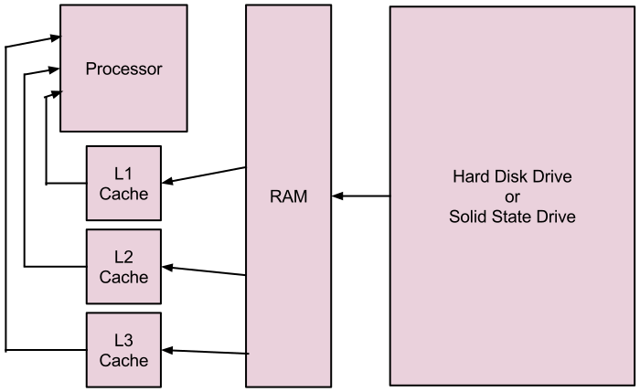

Computers are fancy and that can be overwhelming. For many they're just a magic box that does the email and the Facebooks. However, when broken down they're actually not that difficult to understand. Hopefully this can help explain some things following the chapter layout of Scott Meuller's Upgrading and Repairing PCs - 21st Edition.
Chapter 1Chapter 1 - Basic History
To understand the history of computers, it's important to first realise that a computer is just a tool for making math easier or automatic. As such, their history extends all the way back to abacuses 4000 years ago. Other old tools that could be called computers include Napier's bones and slide rules.
When it comes to more modern, electronic computers, their history begins with the work of mathematician Alan Turing who, in 1936, published a paper entitled "On Computable Numbers." This paper theorized an imaginary computer called the Turing Machine. After this, the first electronic computers were created and used primarily in war to break encryption and calculate trajectories via the use of vacuum tubes acting as on/off switches. These early computers were massive and inefficient. For example, the machine known as ENIAC (Electrical Numerical Integrator and Calculator) took up 1800 sq. ft. of floor space and consumed 180,000 watts of power while needing punchcards to receive input.
Two of the biggest flaws/difficulties of early computers were their lack of programmability and the vacuum tubes. In order to reprogram these computers, they had to be entirely rewired from the inside. This was an obvious efficiency problem which was solved in 1945 when mathematician John von Neumann conceptualized the architecture that allowed a computer to store programs as data. As for the problem with vacuum tubes, they are a glass tube with a heated cathode, a control grid, and a plate inside. If the control grid is given a positive charge, electrons flow from the cathode to the plate (ON) and with a negative charge, electrons are forced back towards the control grid (OFF). These were large and used a lot of power, resulting in high costs and overheating. To fix this problem, the transistor was invented in 1947 by John Bardeen, Walter Brattain, and William Shockley. Transistors function on the same basic idea as a vacuum tube but all components are replaced by silicon mixed with certain impurities (or doped) and a wire to create semiconductors. P-type, or positive due to a lack of free electrons, silicon is doped with boron and N-type, or negative due to an excess of free electrons, silicon is doped with phosphorous. Normally these two types of silicon do not share electrons (OFF) but the application of an electric charge allows electrons to flow (ON), much like a vacuum tube. Unlike a vacuum tube, a transistor is significantly smaller and consumes significantly less power.
With these two advancements, computers have stayed mostly the same while steadily growing in power (Moore's "Law" theorizes that power doubles every 18-24 months, which so far has been very accurate).
Chapter 2Chapter 2 - Component Overview
A computer is comprised of many individual parts which can be split into two categories, hardware and software. Hardware is the physical components and software is purely digital.
Hardware consists of:
| Processor | Performs the calculations that the PC needs in order to do anything. |
| Motherboard | Connects all components of the PC together. |
| Memory (RAM) | Temporarily stores information that the processor needs. |
| Hard Drive | Permanently stores all information on the system. |
| Optical Drive | Allows the system to read removable information stored on CDs, DVDs, or Blu-Ray discs. |
| Power Supply | Provides power to system. |
| Graphics Card* | Specialized additional processor that specifically handles complex visuals. |
| Sound Card* | Specialized additional processor that specifically handles complex audio. |
| Network Card* | Allows the computer to connect to a network either through a wired or wireless connection. |
| Case | Holds all components in place. |
| Monitor | Displays the computer's interface. |
| Keyboard/Mouse | Allows the user to interact with the computer and input commands. |
Also worth mentioning are various peripherals such as speakers, headphones/headsets, printers, scanners, etc.
Software consists of:
| BIOS | The most basic, default software on the computer. |
| Operating System | Serves as a link between hardware and programs. |
Chapter 3Chapter 3 - Processors
The processor is the most important (and as such also the most expensive) component of a computer. It is essentially the brain of the computer, managing all of the calculations the various programs need it to manage. It's important to note that this is all the processor does. It may be the brains of the computer, but it's not exactly smart. Rather, the different memories and programs handle all smartness requirements. Historically, Intel has dominated the processor market, however recently AMD (Advanced Micro Devices) has come to split that market.
To understand the history of processors, we must first understand how a processor's ability to perfrom is measured.
The first number looked at is a value in Hertz which to most people is fairly meaningless other than the idea that a bigger number is better, which is mostly true. Hertz is a measurement of cycles per second or clock speed which, in the case of processors, is determined by the vibration of a quartz crystal. While this is nice information to have, it's not always all that useful because different processors are able to complete different amounts of tasks within a single cycle. Older processors were also able to line up smaller tasks in a "pipeline" which were accomplished more slowly in terms of actions per cycle but compensated with faster clock speeds (however, this used up more power and thus generated more heat, leading to pipelines being replaced by hyperthreading and multicore processors, which will be discussed in detail later). For comparison, the very first microprocessor, the Intel 4004 made in 1971 in order to power a Japanese calculator, ran at a clock speed of 740KHz whereas a modern Intel i7 4790 runs at up to 4.40 GHz (6000x faster).
A second number to look at, though rarely advertised or even kept secret, is how many transistors there are in a given processor. As detailed in the first chapter, a transistor is two types of silicon semiconductors and a wire being used together as an ON/OFF switch. Using these switches as 1's and 0's the processor is able to use data to do whatever it needs to do. Naturally, more transistors means a greater ability to do math. Likewise, being able to put more transistors closer together allows the processor to take up less space. To refer again to the first processor, the Intel 4004 had a transistor count of 2300 spaced 10 microns (1 micron being one one-millionth of a meter) apart while modern processors have transistors counts in the billions spaced 22 nanometers (1 nanometer being one one-billionth of a meter) apart.
Similar to transistor count, another important value is the width of the data (I/O) bus, address bus, and internal registries. The data bus is what allows data to move into and out of the processor (there is often more than one), the address bus refers to the memory location of a piece of data, and internal registries the amount of information the processor can work with at one time. In a modern processor, the data bus is 64 bits wide, the address is 40 bits wide, and new processors have both 32 and 64 bit registries (all of this keeping in mind that one byte of data is composed of eight individual bits). The Intel 4004 had a 4 bit data bus.
Another commonly heard descriptor of a processor is the amount of cores that it has. This refers to modern processors essentially being multiple processors working together to split the load of tasks. This is itself an extension of hyperthreading technology which takes unused portions of a processor and dedicates them to some other task, effectively doing the work of two processors (realistically, the amount of processing power is not doubled, but an increase in 25% or more is common). Today's processors all use multiple cores but vary in whether or not they use hyperthreading. For example, an Intel i7 4790k has four hyperthreaded cores while an AMD FX 9590 has eight non-hyperthreaded cores.
A final thing to look at is the cache, a special type of memory that functions as an intermediary between the processor and the main memory in order to let the processor run as fast as it can. In Upgrading and Repairing PCs, this subject is discussed in chapter three. For the purposes of this page, however, the discussion on caches is being rolled into chapter six.
All of these variables make comparing processors difficult. As a result, benchmarks are used run scripts to create an accurate picture of how the processor will perform while doing normal tasks. Unfortunately, benchmarks may also not be accurate because a benchmarking company might not have their benchmark properly optimized equally for different processors.
Chapter 4Chapter 4 - Motherboards
The motherboard is a circuit board that connects all of the various components of the system together. Included on the motherboard are:
- The socket for the processor
- Northbridge and Southbridge chips
- The BIOS chip(s) and battery
- DIMM slots for memory sticks
- Expansion slots for things like video, sound, and network cards
- The sockets for the hard disk and solid state drives
- The sockets for the power supply cables
- The sockets for the optical drives
- The sockets for the fans and other cooling systems
- Various input/output ports including USB, audio, video, and ethernet
Chapter 5Chapter 5 - BIOS
BIOS, which stands for Basic Input/Output System and is also known as device drivers or just drives, is the software that serves as the bridge between the hardware and the operating system. When the computer is powered on, BIOS is what gives the processor its first instructions, checks that all components are functioning (Power On Start Test or POST), and allows the operating system to be loaded and to take over.
Physically, BIOS is stored on a chip of non-volatile read-only memory (ROM, meaning it is either impossible or extremely difficult to write to) attached directly to the motherboard. It is important and perhaps counter-intuitive to note that while the BIOS itself has a manufacturer, any updates or upgrades must be gotten through the manufacturer of the motherboard. This is because the BIOS chip runs a custom version designed to run specifically with that motherboard.
Chapter 6 - MemoryChapter 6 - Memory
Memory is what holds onto data and it comes in a variety of different types. The first important distinction is whether or not that memory is volatile or non-volatile. Volatile memory dumps all data when it loses power, such as caches and main memory sticks, while non-volatile memory holds onto it despite the lack of power, such as flash memory and hard drives. As mentioned in the previous chapter, BIOS is an example of something stored onto flash memory and hard drives will be described in fuller detail in chapter nine. This chapter will focus on
Volatile memory can itself be divided into two categories, dynamic random-access memory (DRAM) and static random-access memory (SRAM), with "random-access" referring to the fact that the date held within can be accessed in any random order (ROM and hard drives are also RAM, but because of their non-volatility they are usually kept to their own seperate designation). Dynamic RAM is dense, meaning that is able to store a lot of data in a small space, as well as cheap, however it is also transfers data quite slowly. By contrast, static RAM is fast, but also takes up a large amount of physical space and is expensive. In order to work around these strengths and weaknesses, DRAM and SRAM both fulfill different roles in a computer.
DRAM is generally what people are referring to when they mention memory and is a set of memory chips on its own board plugged into the motherboard via DIMM slots. This acts as the first set of memory, drawing a copy of the information the processor will need from its permanent location. The DRAM used as main memory in current computers is called DDR3 SDRAM (DDR4 will be available soon, though not likely to be cost efficient any time soon). The S in SDRAM refers to the memory running synchonized with the memory bus. Prior to this change, DRAM ran as quickly as it could which sounds nice, but really it just results in more time waiting. Synchronizing the memory to the bus allows the everything to function at the same time, increasing speeds. DDR, or double data rate, means that instead of transfering data once per clock cycle, the memory moves data twice per cycle. The three is just the designation of the current generation.
SRAM is the processor's caches, usually integrated directly onto the processor die. These act as a second stage of memory in between the main memory and the processor in order to compensate for the main memory not being as fast as the processor. Cache memory is also smarter than main memory, holding onto data that the processor is most likely to need rather than anything it could need. However, the cache does not always correctly guess what the processor will need, forcing the processor to get that information from the slower main memory. This is known as a cache miss and is fairly rare (90% of the time the cache does its job correctly). Regardless of rarity, the processor has three levels of cache memory to prevent the likelihood of a miss, L1, L2, and L3. Each level of cache memory has data the processor is likely to need and, in the event L1 misses, L2 will probably have the correct piece of data. In the event L2 misses, L3 will likely have the information needed. If all three miss then something went horribly wrong and the processor must consult the slow main memory. In the case of multicore processors, each processor has its own L1 and L2 caches while sharing a single L3 cache.
In the case that my explanation has failed, consult this diagram:

Chapter 7Chapter 7 - ATA/IDE Interface
[PH Text] Stuffffff
Chapter 8Chapter 8 - Magnetic Storage Principles
[PH Text] Stuffffff
Chapter 9Chapter 9 - Hard Disk Storage
[PH Text] Stuffffff
Chapter 10Chapter 10 - Flash and Removable Storage
[PH Text] Stuffffff
Chapter 11Chapter 11 - Optical Storage
[PH Text] Stuffffff
Chapter 12Chapter 12 - Video Hardware
[PH Text] Stuffffff
Chapter 13Chapter 13 - Audio Hardware
[PH Text] Stuffffff
Chapter 14Chapter 14 - External I/O Interfaces
[PH Text] Stuffffff
Chapter 15Chapter 15 - Input Devices
[PH Text] Stuffffff
Chapter 17Chapter 17 - Local Area Networking
[PH Text] Stuffffff
Chapter 18Chapter 18 - Power Supply Unit
The power supply unit converts power from a wall socket into different voltages that the computer's components are able to use. It is simultaneously one of the most important components as well as one of the most overlooked. Using different rails and sending along multiple wires (spreading between small, thinner wires are more efficient and cheaper than one large wire), the PSU provides +3.3V, +5V, and +12V to various components depending on their needs. Previously PSUs also supplied -5V and -12V, but these are both (mostly) obsolete in modern systems. Wires go to the motherboard, CPU, storage devices, and peripherals with the bundle of wires going to the motherboard being the largest (20 or 24). CPU power connectors use either 4 or 8 wires/pins, peripheral connectors use 4, 6, or 8 pins with two pins per wire for 6 and 8 pin connectors, and SATA connectors use a 15 pin connector with three pins per wire.
Like the motherboard, PSUs follow standard form factors, ATX being the most common but also including SFX (small), EPS (entry-level), TFX (thin), CFX (compact), LFX (low profile), and Flex ATX.
BonusBonus Section - Binary and Hexadecimal
Many people already know that information used by computers is, "a bunch of 1's and 0's," but what, exactly, does that mean?
Firstly, an explanation of a number system that you probably already know.
For the most part, human civilizations use a base-10 numbering system (decimal). This means that they count with 10 symbols:
After 9, another place value is added.
Place values can also be thought of as exponents, where the one's place is represented as 100, the ten's place is 101, the one-hundred's place as 102, etc.
Computers use a base-2 numbering system (binary) because transistors (and the much older tubes) have two states, off and on, which can be represented by 0 and 1, respectively. After 1, another place value is added. In computing terms, each place value is a bit.
Like with base-10, each place value can be thought of as exponents, where the first place is represented as 20, the second place as 21, the third place as 22, the fourth as 23, etc. Because a byte is only eight place values or bits, we really only need to know up to 27, or 128.
With this information, converting between binary and decimal is fairly straight forward. Converting from binary to decimal is as simple as basic addition.
For example, let's look at the value 10112. Every place value that contains a 1 can be converted to its equivilent exponent and then added together to get the decimal equivilant. So, from left to right, 8 in the first place value, nothing in the second, 2 in the third, and 1 in the fourth.
As another example:
Converting from decimal to binary requires a bit more thought, but still just basic arithmetic. This time we'll be subtracting while using base-2 place value exponents as a checklist.
For example, 1310. The first exponent that can go into 1310 is 23, or 810. This leaves 510 which contains 22 or 410 and leaves only 1. As such, we can convert these exponents to 1101.
As another example:
A long stream of 1's and 0's is difficult to work with, however. Thankfully, we can use another base-16 number system (hexadecimal) to make strings of binary easier to work with. As a base-16 numbering system, hexadeximal uses 16 characters to count.
What makes hexadecimal easy is that, like with binary, each place value can be expressed as an exponent of 2, with the first place value in hexadecimal being 20, the second being 24, the third being 28, and so on. This corresponds to every four place values in binary being equal to a single place value in hexadecimal. As such we just need to break the binary number up into four-bit chunks, figure out what that chunk is in decimal, and then match that to the corresponding hexadecimal character.
For example, 11102 is the equivilant of 1410 which is the equivilant of E16.
As another longer example, 101100102 can be broken into two chunks, 10112 and 00102, which are 1110 and 210, respectively, giving us the hexadecimal number B216.
We can go in reverse just as easily.
Note: While we use base-10 numbers to easily convert hexadecimal to binary, those base-10 numbers are just placeholders and are not the solution to converting hexadecimal to decimal (i.e. CD16 is not equal to 121310). However, they are still the first step to converting to decimal. The second step is to multiply each value by its respective place value exponent. So in the example of CD16, the first value, C16, occupies the 24 place value and the second value, D16, occupies the 20 place value. Thus:
To convert decimal to hexadecimal, we just need to divide repeatedly by 16, making note of whatever the remainder may be, until a quotient less than 16 is reached. The remainders and final quotient are switched to their hexadecimal equivilants, then arranged in the order they were found, with the last quotient being in the last place. This number is then reversed, resulting in the final hexadecimal number.
For example: 487910
Alternatively, you can just set a calculator to programmer mode and switch between the different bases with ease, completely ignoring everything that's been said here.